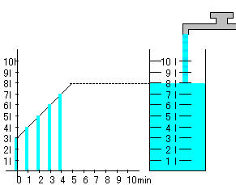

Linear Function and Graph
Introduction
Let us observe the pouring water into a tank.
You can see the relation between time and volume. The gradient of the line is the velocity of the amount of flowing water.

Applet